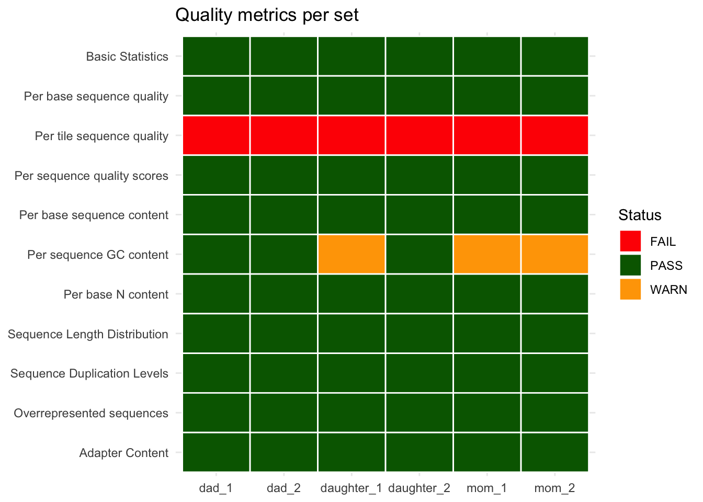
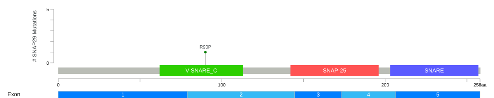

Case report: CEDNIK SYNDROME
Introduction
Neurocutaneous syndrome, characterized by cerebral dysgenesis, neuropathy, ichthyosis, and keratoderma, or CEDNIK syndrome for short, is a autosomal recessive genetic disorder1. This disease is caused by a loss-of-function variant in SNAP29 (synaptosomal-associated protein 29), which encodes a SNARE protein, a vesicular membrane fusion protein2. Symptoms of the disease Microcephaly, Global developmental delay, Ataxia, Ichthyosis, Diffuse palmoplantar hyperkeratosis.
This syndrome was first discovered in 2005— within the 22q11.2 region and the SNAP29 gene —using homozygosity mapping on two unrelated families with a history of consanguineous marriage that exhibited similar symptoms3. In the subsequent years, up to 2021, nearly 20 variants of this syndrome were discovered4.
CEDNIK syndrome is an extremely rare disorder, with an estimated prevalence of less than 1 per 1,000,000 individuals; a reliable population-based incidence has not been established due to the small number of reported cases5.
Variant detection and diagnosis have become much more accessible with the advent of next-generation sequencing (NGS). Unlike earlier sequencing technologies, NGS enables the simultaneous analysis of anything from a few genes to hundreds of genes, the entire exome, or even the whole genome. NGS systems employ approaches such as whole-genome sequencing (WGS) and whole-exome sequencing (WES)6.
In this report, we focus on WES because Sydnik syndrome is a Mendelian monogenic disorder; identifying variations within the exons alone is generally sufficient for its detection. In the case we analyzed, a 3-year-old girl exhibited symptoms of the syndrome while her parents were healthy; therefore, our objective was to perform WES for this family of three and identify the variant by comparing the results against the reference human genome (GRCh37/hg19). This type of analytical method is known as “trio analysis”7, and given that this syndrome is an autosomal recessive disorder, we can infer that both parents are heterozygous carriers1.
Study Participants/Whole exome sequencing
The base of our work is publicly available genetic data from a Spanish family, here consisting of a father, mother and their daughter, referred to as “the Corpasome”8. In our case the genome of the daughter is synthetically altered and a disease phenotype called CEDNIK Syndrome, caused by these alterations, is diagnosed. Main symptoms are developmental delay and skin disorder. The latter mainfasting at the age of two in ichthyosis and thickening of palms and soles. Further, she has been diagnosed with microcephaly and poor motor development as well as impaired coordination. As Cednik Syndrome is an autosomal recessive inheritable disease and the parents are healthy, the father and mother both have one chromosome with the disease-causing variant and one without. After deciding to make their genomes publicly available, the Corpas family bought direct-to-consumer sequencing privately to collect DNA in saliva using Oragene kits. Exomes were captured with Agilent SureSelect Human All Exon (44 Mb design) and sequenced on Illumina HiSeq with an average coverage of about 30x over the target region.
NGS data preprocessing
Next-Generation Sequencing (NGS) data pre-processing was used to refine and align the raw reads given to downstream Whole-Exome Sequencing (WES) analysis. The input data set comprised individual raw FASTQ (.fq) files corresponding to the family trio: mother, father, and affected child, from the Corpasome family. They are organized for each person as as paired-ends reads, 150 bp per read for R1 and R2.
Using the raw data (.fq) as an input, we can graph and see the organization of the sequences, GC percentage and the quality scores through the FastQC Report (version 0.12.1) in .fqc files. We considerate the Q scores above 30 (Q30), in acordance to the standart Illumina quality trimming sequence9.
To process the alignments, the “Burrows-Wheeler Aligner (bwa mem)”10 tool converts our .fq files into .bam/.sam files by comparing the qualities and positions against a reference genome; which, for this study was hg19. With the binary version (.bam), we can easly access to specific genomic regions using index files (.bai), allowing the reads of each family member to be processed and indexed efficiently in the vcf files.
A selection of variants is uptake from the comparison form specific regions identified on the .bai files from the comparison of the hg19 reference genome. To refine the search for possible SNPs, we cross-reference with the dbSNP database for hg19, allowing the algorithm to prevent confusing a real mutation with a sequencing error when re calibrating base qualities.
Using the refined regions of interest, we call GATK3 (ver 4.1.4.1) to perform variant calling on the BAM files using the “HaplotypeCaller” function. This tool performs a local de novo assembly of haplotypes in active regions, allowing it to detect both SNPs and complex indels with high precision11. Finally, the resulting variants are stored as VCF files that could be converted into BCF.
Finally, to process the detected genetic variants, the ANNOVAR tool helped merge the resulting variant compilation into a readable table. This table in .tsv format contains genetic annotations, known identifiers, predictive scores, clinical relevance, and genomic coordinates12.

Variant annotation and filtering
Results
QC
| Filename | Total Sequences | Total Bases | Sequence length | %GC |
|---|---|---|---|---|
| dad.chr22.1.fq | 443996 | 39.9 Mbp | 90 | 45 |
| dad.chr22.2.fq | 443996 | 39.9 Mbp | 90 | 45 |
| daughter.chr22.1.fq | 374416 | 33.6 Mbp | 90 | 45 |
| daughter.chr22.2.fq | 374416 | 33.6 Mbp | 90 | 45 |
| mom.chr22.1.fq | 388450 | 34.9 Mbp | 90 | 44 |
| mom.chr22.2.fq | 388450 | 34.9 Mbp | 90 | 44 |
To begin the WES analysis, it is important to build on raw-read data that fulfills the quality requirements. By assessing the quality of the fastq file, it can be assured that later interpretation is not based on technical errors. Regarding the Corpasome data, the sequence length for all samples is as expected as well as the GC percentage with small variations in the reads of the mother displaying a percentage of 44 compared to 45% in the father and daughter. The number of total sequences as well as the number of bases measured is the same for read 1 and read 2 in each family member, whereas the number varies between different persons. The maximal difference can be found between the father and the daughter where the father has 6.3 Mbp more. These differences, however, lie within the natural range of variation of genome sizes. (check reference!)

The boxplot depicts the mean quality score per position in each read separately for read 1 and read 2 in the father, mother and daughter. For each sample the last positions of some reads fall beneath the threshold of a quality score of 30 while the best quality scores are achieved for positions in the middle of the read. Especially in the reads coming from the mother, quality scores beneath 20 are achieved. However, for all positions in all samples the median remains at a quality score above 30 meaning that no reads need to be shortened for the downstream analysis. Nevertheless, it is important to remark that the samples derived from the mother show the lowest quality across different metrics.(which ones)
From the quality control regarding the raw sequencing data, there is no detectable issue that would affect further analysis. Furthermore, in the following steps, more metrics will be assessed to assure correct variant calling.
Sample processing
| Filename | description | dad | mom | daughter |
|---|---|---|---|---|
| bam | Aligned and sorted | 898321.0 | 785625.0 | 756509.0 |
| markdup.bam | Duplicates removal | 681478.0 | 610207.0 | 551548.0 |
| realn.bam | Indel realignment | 681478.0 | 610207.0 | 551548.0 |
| recal.bam | Base quality recalibration | 681478.0 | 610207.0 | 551548.0 |
| Removed (total) | 216843.0 | 175418.0 | 204961.0 | |
| Removed (%) | 24.1 | 22.3 | 27.1 |
The table displays the different steps of sample processing and the effect on the number of alignments. As expected, only the duplication removal reduces the number of records. In total 216,843 alignments have been removed in the sample of the dad, 175,418 for the mom and 204,961 for the daughter, which is in a range of 22.3% to 27.1% of all alignments in the unprocessed file.
Variant calling/filtering
To begin the variant calling, the raw file includes all covered positions in exons which could potentially contain variants. It includes all three samples and displays 1,418,395 positions. After the variant calling 8,803 of these positions are defined as SNPs in the bcf file which is about 0.62% of the positions in the raw file. To refine the variant calling, positions with a read depth below 20 are removed. 5,898 positions remain in the vcf file. These are 5,983 variants if multi-allelic sites are considered and split in separate rows. This process is also called demultiplexing. Further conversion to tsv and annotation using ANNOVAR, does not change the number of variants. The resulting file with 5,983 variants can now be used for downstream analysis and filtering of possible disease-causing variants.
| Ref | Alt | Count | Type |
|---|---|---|---|
| A | G | 1015 | Transition |
| C | T | 1028 | Transition |
| G | A | 1074 | Transition |
| T | C | 963 | Transition |
| A | C | 186 | Transversion |
| A | T | 138 | Transversion |
| C | A | 244 | Transversion |
| C | G | 258 | Transversion |
| G | C | 279 | Transversion |
| G | T | 232 | Transversion |
| T | A | 150 | Transversion |
| T | G | 182 | Transversion |
| Type | Count |
|---|---|
| Nonsynonymous | 521 |
| Synonymous | 525 |
Besides ensuring sufficient read depth, the transition-transversion ratio as well as the nonsynonymous/synonymous SNP ratio are quality metrics to control for correct variant calling Since transitions require less energy, the ratio of transition-transversion is expected to be > 2 which is also reflected in the data presenting a ratio of 2.44. Regarding the nonsynonymous/synonymous SNP ratio a 1 to 1.2 ratio is usual. Our data presents a ratio of 0.99.
The tables below provide further information about the location and effect of the variants. Regarding the location, about two third of the variants are located in intergenic or intronic regions. Exonic variants follow with a sixth of all variants. To get a deeper look in the extronic variants, table 2 shows that almost half of the variants are synonymous meaning that the resulting aminoacid does not change in the protein.
| Func.refGene | n |
|---|---|
| intergenic | 2724 |
| intronic | 1308 |
| exonic | 1093 |
| ncRNA_exonic | 509 |
| UTR3 | 146 |
| ncRNA_intronic | 113 |
| upstream | 36 |
| downstream | 35 |
| UTR5 | 17 |
| ncRNA_splicing | 1 |
| splicing | 1 |
| ExonicFunc.refGene | n |
|---|---|
| frameshift deletion | 11 |
| frameshift insertion | 7 |
| nonframeshift deletion | 7 |
| nonframeshift insertion | 3 |
| nonsynonymous SNV | 521 |
| stopgain | 5 |
| stoploss | 1 |
| synonymous SNV | 525 |
| unknown | 13 |
To identify the disease-causing variant, a comparison with the parental genomes is useful to find a possible recessive pattern. Out of the 5,983 variants, 153 were found to be recessive. Additionally, a filter is applied to discard common variants which in this case in only one variant. Since exonic variants are the most probable kind of variant to alter the gene product namely the protein, they are of biggest interest in this case report. The next filtering step removes all nonexonic variants and further filtering is applied to remove synonymous variants as well as nonframeshift deletions or insertions because their effect on the protein is usually not pathogenic. Finally, 23 variants in 11 different genes are left.
| Chr | POS | Ref | Alt | Gene.refGene | ExonicFunc.refGene |
|---|---|---|---|---|---|
| chr22 | 17072909 | C | T | CCT8L2 | nonsynonymous SNV |
| chr22 | 17072918 | A | G | CCT8L2 | nonsynonymous SNV |
| chr22 | 18096055 | C | T | ATP6V1E1 | nonsynonymous SNV |
| chr22 | 20939211 | G | A | MED15 | nonsynonymous SNV |
| chr22 | 21224656 | G | C | SNAP29 | nonsynonymous SNV |
| chr22 | 22868493 | G | T | ZNF280A | nonsynonymous SNV |
| chr22 | 22868497 | G | C | ZNF280A | nonsynonymous SNV |
| chr22 | 22869123 | T | C | ZNF280A | nonsynonymous SNV |
| chr22 | 22869209 | C | G | ZNF280A | nonsynonymous SNV |
| chr22 | 22869218 | T | C | ZNF280A | nonsynonymous SNV |
| chr22 | 22869545 | T | G | ZNF280A | nonsynonymous SNV |
| chr22 | 22869548 | T | C | ZNF280A | nonsynonymous SNV |
| chr22 | 22869742 | C | A | ZNF280A | nonsynonymous SNV |
| chr22 | 32586854 | C | T | RFPL2 | nonsynonymous SNV |
| chr22 | 32586875 | G | A | RFPL2 | nonsynonymous SNV |
| chr22 | 32587027 | G | C | RFPL2 | nonsynonymous SNV |
| chr22 | 32589023 | C | T | RFPL2 | nonsynonymous SNV |
| chr22 | 32590449 | G | A | RFPL2 | nonsynonymous SNV |
| chr22 | 42032585 | A | C | XRCC6 | nonsynonymous SNV |
| chr22 | 42071074 | G | C | NHP2L1 | nonsynonymous SNV |
| chr22 | 43036013 | T | C | ATP5L2 | nonsynonymous SNV |
| chr22 | 50216622 | G | C | BRD1 | nonsynonymous SNV |
| chr22 | 50278568 | A | G | ZBED4 | nonsynonymous SNV |
| Filtering | Variants | Genes |
|---|---|---|
| All variants | 5983 | 298 |
| Recessive | 153 | 61 |
| Noncommon | 152 | 60 |
| Deleterious | 23 | 11 |
In order to select the disease-causing gene out of these 11 candidate genes, the varsome database is used to evalute related phenotypes. Some of these genes are not associated with a disease phenotype (CCT8L2, ZNF280A) or related with different types of cancer (ATP6V1E1, MED15, RFPL2, XRCC6, NHP2L1, ATP5L2. BRD1, ZBED4). The SNAP29 gene, however, is related to the CEDNIK syndrome - an autosomal recessive inherited disease. Furthermore, related HPO terms, namely ichthyosis, palmoplantar keratoderma and neurophathy, match with the described symptoms of the patient.
- How many variants were finally called over all samples and annotated using ANNOVAR? How many variants remaining after each filtering step (1 or 2 tables)? Describe impact of each filtering step by number of qualifying variants.
- How many exonic/intronic variants were called? (1-2 sentences, 1 table). Were there any variants related to alternative splicing?
- How many different exonic variant types (nonsynonymous/synonymous/frameshift/non-frameshiftindels/etc) were called? (1-2 sentences, 1 table).
- QC measures: calculate and discuss
- transistion/transversion ratio WGS, WES?
- nonsynonymous/synonymous ratio
Analysis of the candidate gene

The identified variant can be found at position 90 where arginine is exchanged by proline due to a transition from guanine to cytosine at position 21,224,656 in the chromosome 22. Using the UCSC liftover tool the variant at the position chr22:21224656 in the hg19 reference genome could be mapped to chr22:20870368 in the hg38 genome13. This is useful to search databases including both genomes to find also newly added findings relying on the hg38 genome.


At the variant position, the read depth is sufficient for a reliable genotype call in all three samples with 78 reads covering the position in the father, 72 in the mother and 73 in the daughter. Both parents are heterozygous and show a similar allele ratio of about 53 % guanine and 47 % cytosine. The daughter is homozygous for the alternative allele, with 90 % of her reads showing cytosine. This is consistent with a recessive mode of inheritance, because both parents are unaffected carriers and the affected child has two copies of the variant. Remarkably, about 10 % of the daughter’s reads show guanine. This is unlikely to reflect a true second allele, but rather shows a technical artefact, such as sequencing errors, misaligned reads or even a contamination with parental DNA.
| sample | chr22_mean | gene_mean | exon_mean | exon_pct_20x | depth_at_position |
|---|---|---|---|---|---|
| dad | 4.77 | 3.62 | 14.10 | 21.6 | 78 |
| mom | 4.14 | 3.17 | 12.90 | 21.0 | 72 |
| daughter | 4.75 | 3.53 | 14.04 | 21.6 | 73 |
The table above summarizes the coverage from the whole chromosome narrowed down to the gene, exon and particular position of the candidate variant. It seems that the coverage of the chromosome and the gene is very little, but since the data is based on WES the high percentage of introns distort the calculated numbers. Thus, it is important to consider exon sequencing only and include the coverage of the particular position. Taking this into account the sequencing depth covering the interval of 703 nucleotides containing the candidate variant is above 12x for all three samples and around 21 % of all positions in the considered interval present a coverage above 20x making the called nucleotides highly reliable. At the considered position which is in the middle of the exon, the coverage is above 70x allowing further analysis based on the sequenced nucleotides. In our case it is important to mention that these high coverage values are caused by the synthetic introduction of the variant rather than showing real sample reads.


To better visualize the coverage at the relevant interval the graphic above depicts the sequencing depth per position separately for each sample. The dotted line represents the variant position. Interestingly, the interval extracted from annotated file does not represent the exonic region containing the variant but also shows intronic regions where read depth drops to 0x. The highest peak with values above 70x can be observed at the target positions which aligns well with the previous findings in the table. Further the neighboring regions has a good coverage allowing reliable variant calling. Still, this graphic shows that correct annotations of genomic regions are important for correct interpretation and there is the need to control for correct annotation. As a reference the whole region, here using the father’s sample, can be observed in igv showing the coverage of the exon containing the variant on the left and a second exon further downstream resulting in the second lower peak of higher coverage values in the diagram. These values reflect the natural range of sequencing depth as there has not been a synthetic alteration.
The variant 22-21224656-G-C has not been reported in the population database gnomAD which hints towards an extremely rare variant14. This finding fits well with the observed phenotype as the CEDNIK syndrome is a very rare disease. At this position, variants of G-A and G-T have been reported, but also with a very rare allele frequency which underlines the hypothesis further. In gnomAD, SNAP29 shows no depletion of missense variants (expected: 148.1, observed 178, o/e 1.20, Z = -0.87). For predicted loss-of-function variants, 12.2 SNVs would be expected and 5 have been observed14. This could point to weak depletion, but with so few observed variants the estimate is imprecise, and the data do not provide convincing evidence of constraint. This pattern is expected for a gene associated with an autosomal recessive disorder because heterozygous carriers are unaffected meaning that deleterious alleles are not strongly selected against and can persist with a low frequency in the population. In conclusion, these findings do not support nor argue against the candidate gene. Additionally, these metrics conclude on the whole gene and cannot distinguish between different variants. Consequently, further evaluation with data specific for the detected variant is necessary.
This can be done using varsome15. Again, the exact variant cannot be found, but predictions done by AlphaMissense and EVE show that this variant is potentially “pathogenic moderate”. Furthermore, the PhastCons100way conservation score of 1.000 and the PhyloP100way score of 4.218 underline that this nucleotide is highly conserved across different vertebras and thereby, probable to be pathogenic if altered.

This visualization from the UCSC Genome Browser13 shows how conserved this position and neighboring nucleotides and amino acids are across different species. The database further depicts the different tissues where SNAP29 is expressed. As the protein is related to fusion of cellular membranes for example during autophagy16, it is expressed in a variety of tissues. Beneath them, brain, skin and skeletal muscle which are affected in the case of the reported child. This enhances SNAP29 being the relevant cause for the observed symptoms. Besides that, other variants within SNAP29 have been reported to be causative for the CEDNIK syndrome16. Some examples are a missense variant exchanging glutamate to lysine at position 89, the depletion of leucine at position 119 or methione to valine at position 184. The variant R90P lies within the C-terminus of the Snare region which is anchored in the vesicle membrane [17]1819. This region builds an alpha helix. Since the exchanged amino acid is an arginine which supports alpha helical structures to a proline which is known to be incompatible with helical structures due to its missing NH-structure due to its ring formation20. The protein folding is assumed to be disturbed. The framework of Franklin suggests a classifaction of VUS for the variant naming low frequencies in gnomAD population databases and in-silico predictions supporting deleterious effects21.
- Annotate your variant with more scores and annotation using wANNOVAR and discuss if they support the hypothesis that the variant is disease causing
- Collect data about your variant and gene and the position of your variant from GeneCards, Uniprot, OMIM, GTEX. Is the variant located in a certain protein domain, does it is region where other disease-causing variants are located, is the protein/gene expressed in the tissue that you would expect?
- Use different tools for variant interpretation like MutationMapper, MuPIT, MTR-viewer, VSranker, ClinVar
Discussion
Summary of analysis results.
Which variant and gene been found?
Is the mode of inheritance of your variant known or not known?
What evidence you have found that supports your hypothesis that you have found a causative variant?
Can you think of experiments that could show that you have found a disease-causing variant?
References
1.
Hsu, T., Coughlin, C.C., Monaghan, K.G., et al. (2017). CEDNIK: Phenotypic and molecular characterization of an additional patient and review of the literature. Child Neurology Open 4, 2329048X17733214. https://doi.org/10.1177/2329048X17733214.
2.
Schiller, S.A., Seebode, C., Wieser, G.L., Goebbels, S., M"obius, W., Horowitz, M., and Emmert, S. (2016). Establishment of two mouse models for CEDNIK syndrome reveals the pivotal role of SNAP29 in epidermal differentiation. Journal of Investigative Dermatology 136, 672–679. https://doi.org/10.1016/j.jid.2015.12.012.
3.
Sprecher, E., Ishida-Yamamoto, A., Mizrahi-Koren, M., Rapaport, D., Goldsher, D., Indelman, M., and Mandel, H. (2005). A mutation in SNAP29, coding for a SNARE protein involved in intracellular trafficking, causes a novel neurocutaneous syndrome characterized by cerebral dysgenesis, neuropathy, ichthyosis, and palmoplantar keratoderma. The American Journal of Human Genetics 77, 242–251. https://doi.org/10.1086/432588.
4.
Mah-Som, A.Y., Skrypnyk, C., Guerin, A., Seroor Jadah, R.H., Vardhan, V.N., McKinstry, R.C., and Shinawi, M.S. (2021). New cohort of patients with CEDNIK syndrome expands the phenotypic and genotypic spectra. Neurology: Genetics 7, e553. https://doi.org/10.1212/NXG.0000000000000553.
5.
Orphanet (n.d.). CEDNIK syndrome.
6.
Brancato, D., Treccarichi, S., Bruno, F., Coniglio, E., Vinci, M., Saccone, S., Cal‘i, F., and Federico, C. (2025). NGS approaches in clinical diagnostics: From workflow to disease-specific applications. International Journal of Molecular Sciences 26, 9597. https://doi.org/10.3390/ijms26199597.
7.
Gabriel, H., Korinth, D., Ritthaler, M., et al. (2022). Trio exome sequencing is highly relevant in prenatal diagnostics. Prenatal Diagnosis 42, 845–851. https://doi.org/10.1002/pd.6081.
8.
Corpas, M., Valdivia-Granda, W., Torres, N., Greshake, B., Coletta, A., Knaus, A., Harrison, A.P., Cariaso, M., Moran, F., Nielsen, F., et al. (2015). Crowdsourced direct-to-consumer genomic analysis of a family quartet. BMC Genomics 16, 910. https://doi.org/10.1186/s12864-015-1973-7.
9.
Illumina Quality scores for next-generation sequencing.
10.
Li, H., and Durbin, R. (2009). Fast and accurate short read alignment with burrows-wheeler transform. Bioinformatics 25, 1754–1760.
11.
Broad Institute (n.d.). HaplotypeCaller.
12.
Wang, K., Li, M., and Hakonarson, H. (2010). ANNOVAR: Functional annotation of genetic variants from high-throughput sequencing data. Nucleic Acids Research 38, e164. https://doi.org/10.1093/nar/gkq603.
13.
Casper, J., Speir, M.L., Raney, B.J., Perez, G., Nassar, L.R., Lee, C.M., Hinrichs, A.S., Gonzalez, J.N., Fischer, C., Diekhans, M., et al. (2026). The UCSC Genome Browser database: 2026 update. Nucleic Acids Research 54, D1331–D1335. https://doi.org/10.1093/nar/gkaf1250.
14.
Guez, J., Goodrich, J.K., Moldovan, M.A., Chao, K.R., Kar, P., Panchal, R., Wilson, M.W., Laricchia, K.M., Rohlicek, G., Biba, D., et al. (2026). Integrating 730,947 exome sequences with clinical literature improves gene discovery. https://doi.org/10.64898/2026.03.23.26349081.
15.
Kopanos, C., Tsiolkas, V., Kouris, A., Chapple, C.E., Albarca Aguilera, M., Meyer, R., and Massouras, A. (2019). VarSome: The human genomic variant search engine. Bioinformatics 35, 1978–1980. https://doi.org/10.1093/bioinformatics/bty897.
16.
The UniProt Consortium, Bateman, A., Martin, M.-J., Orchard, S., Magrane, M., Adesina, A., Ahmad, S., Bowler-Barnett, E.H., Bye-A-Jee, H., Carpentier, D., et al. (2025). UniProt: The Universal Protein Knowledgebase in 2025. Nucleic Acids Research 53, D609–D617. https://doi.org/10.1093/nar/gkae1010.
17.
Gao, J., Aksoy, B.A., Dogrusoz, U., Dresdner, G., Gross, B., Sumer, S.O., Sun, Y., Jacobsen, A., Sinha, R., Larsson, E., et al. (2013). Integrative Analysis of Complex Cancer Genomics and Clinical Profiles Using the cBioPortal. Science Signaling 6. https://doi.org/10.1126/scisignal.2004088.
18.
Cerami, E., Gao, J., Dogrusoz, U., Gross, B.E., Sumer, S.O., Aksoy, B.A., Jacobsen, A., Byrne, C.J., Heuer, M.L., Larsson, E., et al. (2012). The cBio Cancer Genomics Portal: An Open Platform for Exploring Multidimensional Cancer Genomics Data. Cancer Discovery 2, 401–404. https://doi.org/10.1158/2159-8290.CD-12-0095.
19.
De Bruijn, I., Kundra, R., Mastrogiacomo, B., Tran, T.N., Sikina, L., Mazor, T., Li, X., Ochoa, A., Zhao, G., Lai, B., et al. (2023). Analysis and Visualization of Longitudinal Genomic and Clinical Data from the AACR Project GENIE Biopharma Collaborative in cBioPortal. Cancer Research 83, 3861–3867. https://doi.org/10.1158/0008-5472.CAN-23-0816.
20.
Berg, J.M., Gatto, G.J., Hines, J.K., and Tymoczko, J.L. (2026). Zusammensetzung und Struktur der Proteine. In Stryer Biochemie (Springer Berlin Heidelberg), pp. 41–86. https://doi.org/10.1007/978-3-662-72680-8_2.